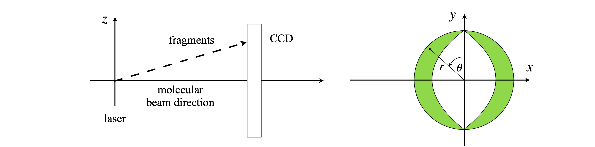

Questions 1 - 3#
Q1 Graphite lattice#
In a teaching lab experiment to measure the lattice spacing of graphite, the angle at which the electrons diffract is measured as their accelerating voltage \(V\) is changed. By the de-Broglie relationship, the electron’s wavelength is \(\lambda = h/p\) where \(p\) is the momentum. The relationship between kinetic energy and accelerating potential is \(eV = p^2/(2m)\), hence, \(p = 2meV\) where \(e\) is the charge on the electron and \(m\) its mass. Combining the wavelength and Bragg’s law \(n\lambda = 2d\sin(\theta)\), produces the equation for the (first-order diffraction) inter-planar spacing \(d\),
In the experiment, the angle \(\theta\) and the voltage are measured; all the other terms are constants. If the error on the angle is \(\sigma_\theta\) and on the voltage \(\sigma_V\)V, what is the variance on \(d\)? Express the result in terms of \(d^2\).
Strategy: Use equation 20, and differentiate in terms of \(\theta\) and \(V\). Simplify and substitute for \(d\).
Q2 Electrode potential#
The electrode potential \(E\) of a reaction \(A_{ox} + ne^- \to A^-_{red}\) is measured to obtain the ratio of activities of oxidized to reduced species, \(Q = a_{red} /a_{ox}\) via the Nernst equation,
(a) If the standard deviation of the measured potential is \(\sigma_E\) and \(\sigma_T\) on the temperature, calculate how these affect the measured ratio of activities. Simplify the answer.
(b) At a given temperature, where will the standard deviation be smallest?
Q3 Molecular beam#
Barlow (1989) gives an example of errors in a tracking chamber measured in cylindrical polar coordinates, and how they are related to errors in \(x, y\), and \(z\). This question examines a similar situation. In a molecular beam experiment, molecules are photo-dissociated and the image of the fragments, ions, or electrons is observed on a CCD camera at angle \(\theta\) and distance \(r\) from the origin at the centre of the detector, figure 6. This is also in the \(x-y\) plane. There is an error in both \(\theta\) and \(r\) because the laser source has a certain size, and dissociation occurs from a finite volume in space, and because the molecules are themselves moving.
Calculate the error in \(x\) and \(y\) on the surface of the CCD camera.
The cylindrical polar coordinates have to be converted to Cartesians and the conversions are \(x = r\cos(\theta), y = r\sin(\theta)\), and \(z = z\). As the distance to the detector is large and fixed, assume that there is no error in \(z\), and ignore this in the calculation.

Figure 6. Geometry of a molecular beam photo-dissociation experiment and a sketch of an image as it might appear on a CCD camera. The oval shape is a consequence of the polarization of the absorption and rate of dissociation.
Strategy: Write down the \(G\) matrix, which is also the Jacobian transformation between Cartesian and polar coordinates (see Chapter 4.11), and multiply out the matrices.